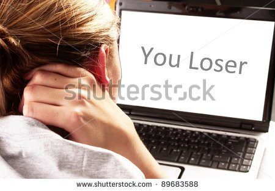

Common characterisitcs of 'The Victim'
- Low self-confidence
- Anxiety
- Fearfulness
- Submissiveness
- Depression or sad appearance
- Limited sense of humor
- Below-average size, strength, or coordination
- Feelings of helplessness
- Self-blame for problems
- Social withdrawal and isolation
- Poor social skills
- Low popularity
- Few or no friends
- Excessive dependence on adults
